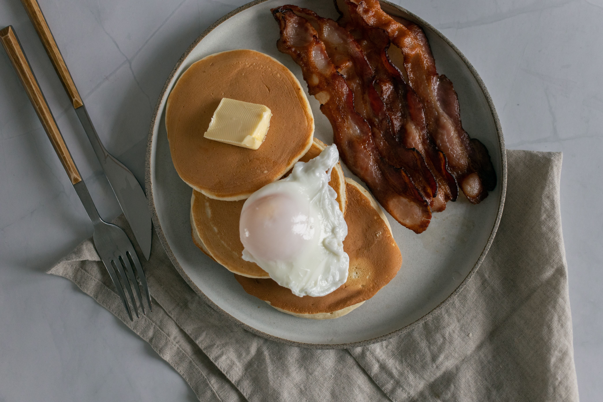

Home
Bacon Pancakes

Description
These bacon pancake dippers are super easy to make and taste delicious. And you only need a couple of ingredients. Use your favorite pancake mix.
Ingredients
- 8 slices bacon
- 1 1/3 cups all-purpose flour
- 3 1/2 teaspoons baking powder
- 1 teaspoon salt
- 1 1/4 cups milk
- 1 egg
- 3 tablespoons butter, melted
- 2 tablespoons maple syrup
Steps
- Cook the bacon in a skillet until crisp. Drain on paper towels and crumble.
- In a large bowl, whisk together the flour, baking powder, and salt.
- In a separate bowl, whisk together the milk, egg, melted butter, and maple syrup.
- Pour the wet ingredients into the dry ingredients and stir until just combined.
- Fold the crumbled bacon into the pancake batter.
- Heat a lightly greased skillet over medium heat.
- Pour the batter onto the skillet and cook until bubbles form on the surface and the edges look set.
- Flip the pancakes and cook until golden brown on the other side.
- Serve warm with additional bacon and maple syrup if desired.